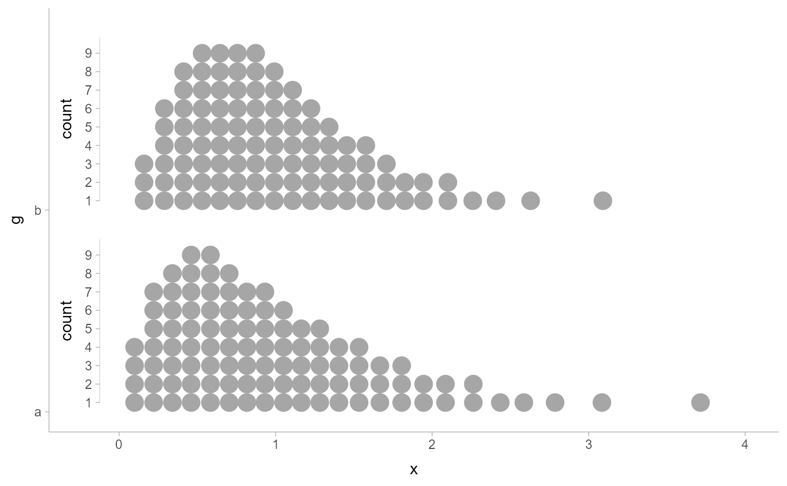

This is a sub-guide intended for annotating the thickness aesthetic
in ggdist. It can be used with the subguide parameter of
geom_slabinterval().
Supports automatic partial function application.
Usage
subguide_axis(
values,
title = NULL,
breaks = waiver(),
labels = waiver(),
position = 0,
just = 0,
label_side = "topright",
orientation = "horizontal",
theme = theme_get()
)
subguide_inside(..., label_side = "inside")
subguide_outside(..., label_side = "outside", just = 1)
subguide_integer(..., breaks = scales::breaks_extended(Q = c(1, 5, 2, 4, 3)))
subguide_count(..., breaks = scales::breaks_width(1))Arguments
- values
Values used to construct the scale used for this guide. Typically provided automatically by
geom_slabinterval().- title
The title of the scale shown on the sub-guide's axis.
- breaks
One of:
NULLfor no breakswaiver()for the default breaks computed by the transformation objectA numeric vector of positions
A function that takes the limits as input and returns breaks as output (e.g., a function returned by
scales::extended_breaks()). Also accepts rlang lambda function notation.
- labels
One of:
NULLfor no labelswaiver()for the default labels computed by the transformation objectA character vector giving labels (must be same length as
breaks)An expression vector (must be the same length as breaks). See ?plotmath for details.
A function that takes the breaks as input and returns labels as output. Also accepts rlang lambda function notation.
- position
Numeric value between
0and1giving the position of the guide relative to the axis:0causes the sub-guide to be drawn on the left or bottom depending on iforientationis"horizontal"or"vertical", and1causes the sub-guide to be drawn on the top or right depending on iforientationis"horizontal"or"vertical". May also be a string indicating the position:"top","right","bottom","left","topright","topleft","bottomright", or"bottomleft".- just
Numeric value between
0and1giving the justification of the guide relative to its position: 0 means aligned towards the inside of the axis edge, 1 means aligned towards the outside of the axis edge.- label_side
Which side of the axis to draw the ticks and labels on.
"topright","top", and"right"are synonyms which cause the labels to be drawn on the top or the right depending on iforientationis"horizontal"or"vertical"."bottomleft","bottom", and"left"are synonyms which cause the labels to be drawn on the bottom or the left depending on iforientationis"horizontal"or"vertical"."topleft"causes the labels to be drawn on the top or the left, and"bottomright"causes the labels to be drawn on the bottom or the right."inside"causes the labels to be drawn on the side closest to the inside of the chart, depending onposition, and"outside"on the side closest to the outside of the chart.- orientation
Orientation of the geometry this sub-guide is for. One of
"horizontal"("y") or"vertical"("x"). See theorientationparameter togeom_slabinterval().- theme
A ggplot2::theme object used to determine the style that the sub-guide elements are drawn in. The title label is drawn using the
"axis.title.x"or"axis.title.y"theme setting, and the axis line, ticks, and tick labels are drawn usingguide_axis(), so the same theme settings that normally apply to axis guides will be followed.- ...
Arguments passed to other functions, typically back to
subguide_axis()itself.
Details
subguide_inside() is a shortcut for drawing labels inside of the chart
region.
subguide_outside() is a shortcut for drawing labels outside of the chart
region.
subguide_integer() only draws breaks that are integer values, useful for
labeling counts in geom_dots().
subguide_count() is a shortcut for drawing labels where every whole number
is labeled, useful for labeling counts in geom_dots(). If your max count is
large, subguide_integer() may be better.
See also
Other sub-guides:
subguide_none()
Examples
# example code
library(ggplot2)
library(distributional)
df = data.frame(d = dist_normal(2:3, 2:3), g = c("a", "b"))
# subguides allow you to label thickness axes
ggplot(df, aes(xdist = d, y = g)) +
stat_slabinterval(subguide = "inside")
# they respect normalization and use of scale_thickness_shared()
ggplot(df, aes(xdist = d, y = g)) +
stat_slabinterval(subguide = "inside", normalize = "groups")
# they can also be positioned outside the plot area, though
# this typically requires manually adjusting plot margins
ggplot(df, aes(xdist = d, y = g)) +
stat_slabinterval(subguide = subguide_outside(title = "density", position = "right")) +
theme(plot.margin = margin(5.5, 50, 5.5, 5.5))
# any of the subguide types will also work to indicate bin counts in
# geom_dots(); subguide_integer() and subguide_count() can be useful for
# dotplots as they only label integers / whole numbers:
df = data.frame(d = dist_gamma(2:3, 2:3), g = c("a", "b"))
ggplot(df, aes(xdist = d, y = g)) +
stat_dots(subguide = subguide_count(label_side = "left", title = "count")) +
scale_y_discrete(expand = expansion(add = 0.1)) +
scale_x_continuous(expand = expansion(add = 0.5))
